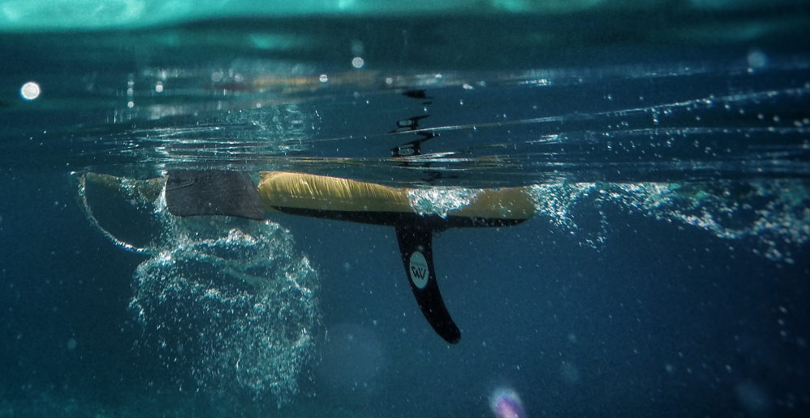
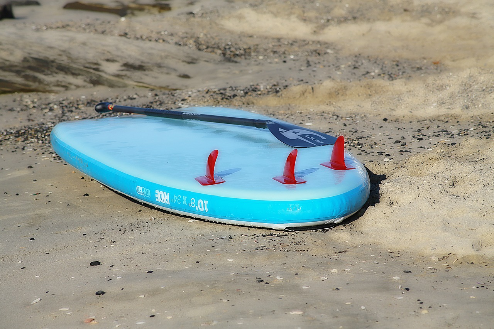

When it comes to daily physical activity, stand up paddle boarding, or SUP, is a great way to work out and have fun at the same time. Most don't realize that the majority of the population lives next to or in very close proximity to a body of water; rivers, lakes, and oceans. Many never give paddle boarding a chance, but, when they do, they usually find themselves hooked on the sport! It's been shown that paddle boarding can be a great way to burn calories and relive stress. Over the years the sport has been growing by leaps and bounds. This is mainly due to availability of inflatable paddle boards. These represent an easy way for a newcomer to the sport to learn how to SUP without spending too much money. Curious to learn what else is so great about inflatable paddle boarding?
iSUP Advantages
This kind of sport would not be popular if it was not for the benefits it brings people. As this is the case, it is only right to ask, what are the advantages of an inflatable stand up paddle board?
- First of all, as it's name implies, it is portable in nature. With this, it can be said that it is easily inflatable and deflatable. With a small pump, iSUPs can be inflatabled with minimal effort. Deflating is just as easy. All you need to do is open a valve and roll up the board. Traditional non-inflatable, ridged, boards are readily available but they are not as easy to travel with.
- They are very easy to transport. Most of the inflatable paddle baords come with a backpack. When rolled up, they can be thrown over your sholder or in the trunk of your car. The reduction in volume is dramatic - sometimes up to 95% of the inflated board size. iSUPs come in all sizes so you can get one no matter how big and tall you are.
- Storing is also very easy. This is the advantage of an inflatable SUP. It does not matter if you are storing in the house or even that in a sport car. There will no longer be a need to spare space in this.
Understanding Inflatable Paddle Boards
With the aforementioned, you can be assured that higher stability awaits you. This is true as compared to that of a non-inflatable counterpart. At least, falling off is not going to happen anymore. This will not be observed because of the built and structure present. Greater safety is also to be expected in this sense. But then, what are the downsides to this? The only thing is that it may be a little less exciting. This may also be the truth to it. It may also become slower, eventually. If you are only a starter though, this is going to be the most appropriate option and that is the best part of it all.
There are so many perks to inflatable paddle boards. One of which is that they usually are at a very friendly price point. You won't have to spend an arm and a leg to get one. From time to time, there are also ample discounts available. Remember to do your research before pulling trigger.